神經網路(Neural Network)
神經元
神經元是啥
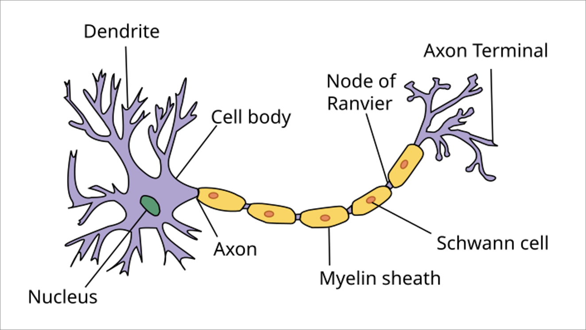
(圖片來源：維基百科)
- Dendrites(樹突)：輸入資料
- cell body(細胞體)：運算
- Synapse(突觸)：輸出資料
線性神經元
線性模型其實就是神經元的應用，有兩個輸入，分別乘上兩個w後再經過激活函數，最後得到\(f(x)\)
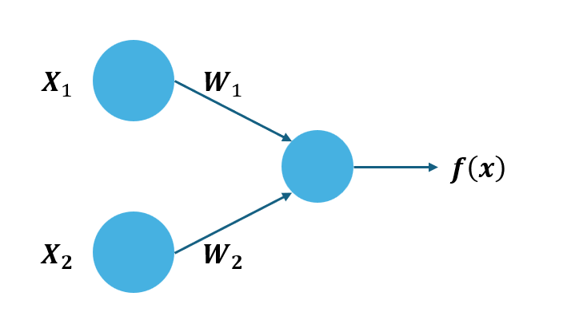
若以線性模型為例
\[ f(x) = w_1x_1 + w_2x_2 = w^T x \]
\[
w^T = \begin{bmatrix} 3 \\ -2 \end{bmatrix}, \quad
x = \begin{bmatrix} 6 & 5 \end{bmatrix}
\]
\[
w^T \cdot x = \begin{bmatrix} 3 \\ -2 \end{bmatrix}
\cdot
\begin{bmatrix} 6 & 5 \end{bmatrix}
= 3 \cdot 6 + (-2) \cdot 5 = 18 - 10 = 8
\]
我們輸入了兩個數值，\(x_1\)、\(x_2\)，最後經過神經元運算得到結果 \(f(x)=8\)。
非線性神經元
如果我們要讓神經元變成非線性，我們要加上激活函數，如圖。
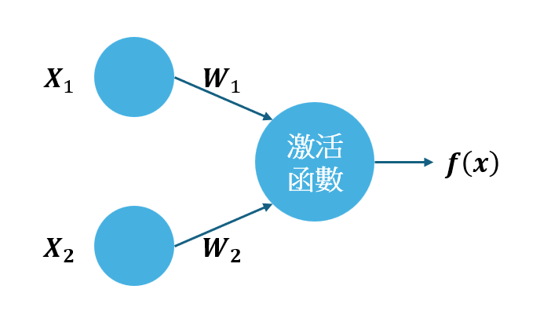
我們先假設激活函數為 \(\sigma(x)\)：
\[
\sigma(x) =
\begin{cases}
1, & \text{if } x > 0, \\
0, & \text{if } x = 0, \\
-1, & \text{if } x < 0.
\end{cases}
\]
我們將原本的線性函數 \(f(x)\) 加上激活函數 \(g(x)\) ：
\[ f(x) =\sigma ( w_1x_1 + w_2x_2) = \sigma(w^T x) \]
\[
w^T = \begin{bmatrix} 3 \\ -2 \end{bmatrix}, \quad
x = \begin{bmatrix} 6 & 5 \end{bmatrix}
\]
\[
w^T \cdot x = \begin{bmatrix} 3 \\ -2 \end{bmatrix}
\cdot
\begin{bmatrix} 6 & 5 \end{bmatrix}
= 3 \cdot 6 + (-2) \cdot 5 = 18 - 10 = 8
\]
\[ f(x)=\sigma(8)=1 \]
所以最後得到1，因為只要結果大於0就是1，所以是非線性。
最後我們再看到下圖，可以發現經過激活函數之後，藍色區域的點座標作為輸入時輸出為1(輸出大於0)，紅色區域的點座標作為輸入時輸出為0(輸出小於0)。
也就是說，一個神經元可以劃出一條線，做一個二元分類。
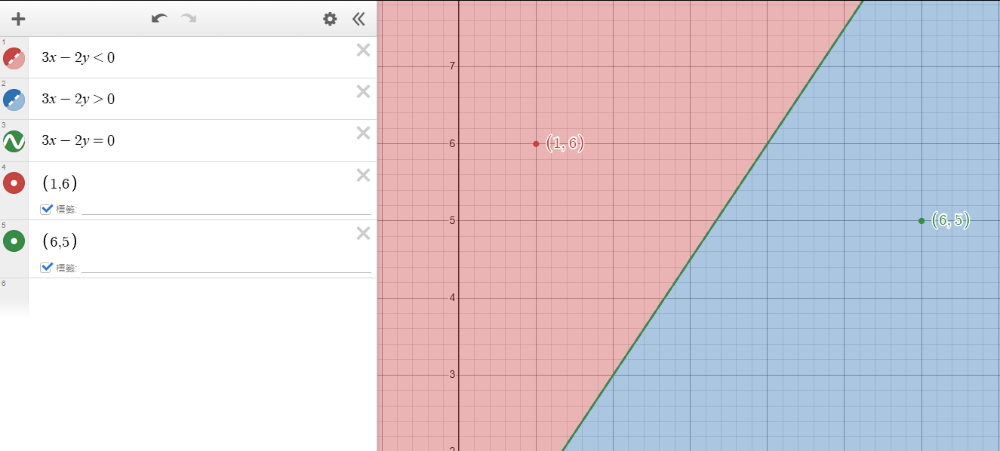
激活函數(Activation function)
我們要將線性函數轉換為非線性函數時，會使用到激活函數。
以下介紹幾種常見激活函數：
Sign
英文字 "Sign" 的意思是「符號」或「記號」，在數學中特指數值的「正」或「負」。
Sign 函數的核心功能是區分數值的符號屬性，並根據數值的符號返回對應的輸出。
輸出值為 0 或 1
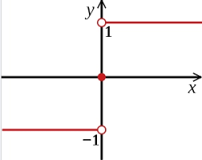
圖片來源
Sigmoid
"Sigmoid" 來自拉丁語 "sigmoides"，意思是「類似於 S 的形狀」。
輸出只有 0 ~ 1 之間，通常使用於機率。
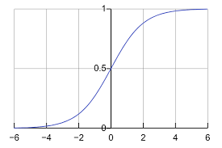
圖片來源
Relu
ReLU 是 Rectified Linear Unit 的縮寫，由三部分組成：
- Rectified：表示「校正的」，指 ReLU 函數將負值校正為零。
- Linear：表示當輸入為正值時，輸出的關係是線性的（即輸入值直接作為輸出值）。
- Unit：源自神經網路的術語，指代「神經元單元」。
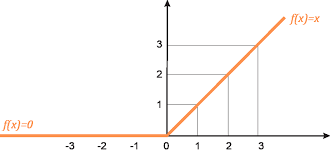
圖片來源
多層神經元
剛剛提到，神經元可以劃出一條線進進行二元分類。
那我們看到下圖，這種情況該怎麼辦？
我們希望畫出一條線分開藍點與紅點，但是我們似乎無法用一條線做到，不管是紅線和綠線都沒辦法一次分開。
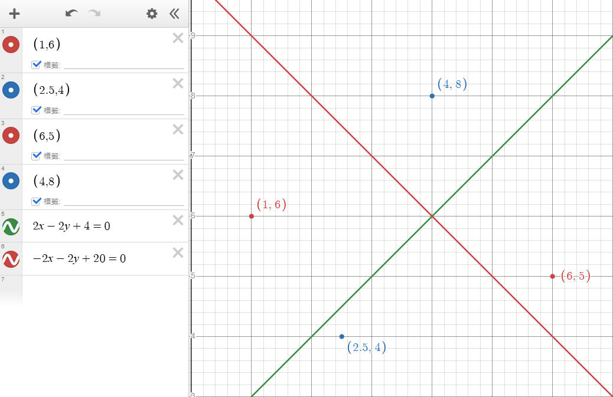
但是如果我們畫出兩條線，看看點是不是在兩條線之間(紅色與綠色重疊區域)就可以判斷出藍色點，如下圖。
也就是說符合「\(3x-y>0\)、\(-3x+2y+3>0\)」就算是藍色點。
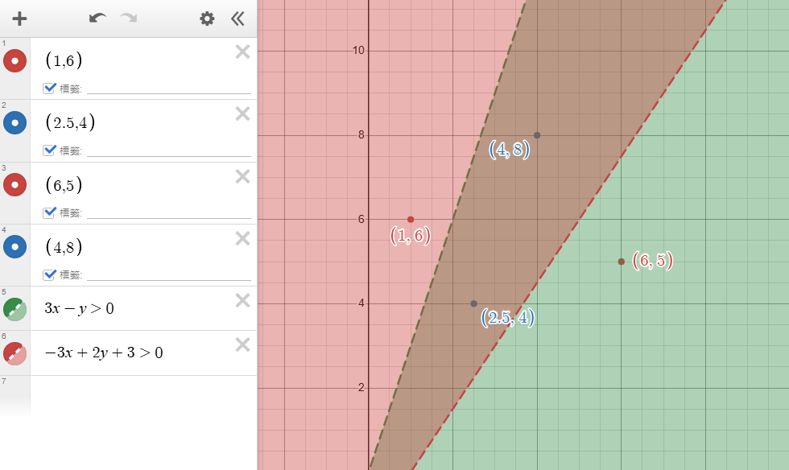
這樣子我們畫出了兩條線，也就是說我們使用了不只一個神經元。
我們以 \(x=(4,8)\) 為例，下圖為三個神經元及計算過程：
最後計算出來是 1，就代表點被歸類為藍色。
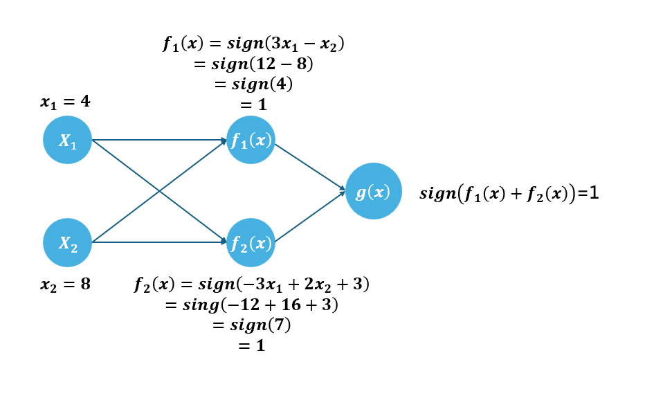
我們寫成數學式：
\[
w_1^T = \begin{bmatrix} 3 \\ -1 \end{bmatrix} , \quad
w_2^T = \begin{bmatrix} -3 \\ 2 \end{bmatrix} , \quad
x = \begin{bmatrix} 4 & 8 \end{bmatrix}
\]
\[ f_1(x) = w_1^T x , \quad f_2(x) = w_2^T x +3 \]
\[ g(x) = sign(f_1(x)+f_2(x)) = 1 \]
這樣我們就成功使用多層神經元做比較困難的事。
從這邊我們就可以理解，遇到要畫圓圈時，我們只要用很多神經元，畫出超多條線就好。
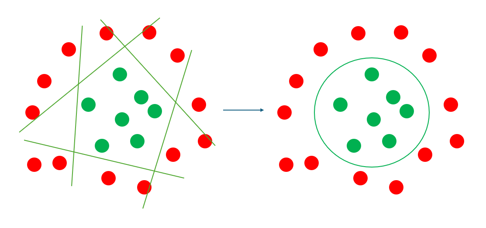
而我們最後我們決定好的神經結構，就是假設集合，如下圖，而學習演算法要挑選出最適合的參數(\(w\))。
多層神經元的計算
接下來我們要來理解如何計算多層神經元。
從前面的二維神經元例子，我們可以整理出：
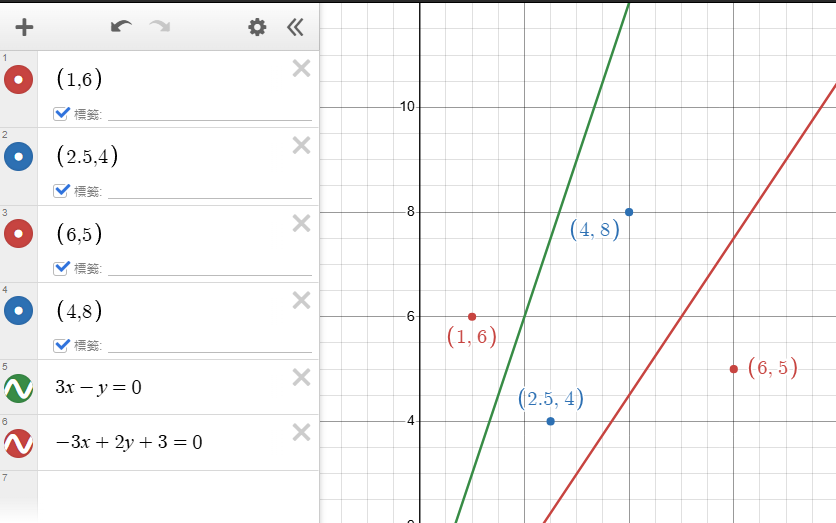
圖一：前面的二維神經元例子
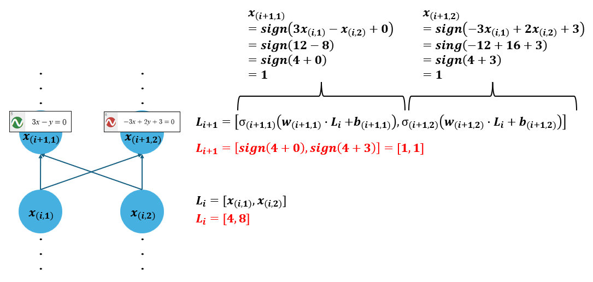
圖二：前面的二維神經元例子的整理
分別說明
第 \(i\) 層第 \(k\) 個神經元的輸出
第 \(i\) 層(Layer)的全部輸出
也就是所有的 \(x_{(i,k)}\) 組成的矩陣
第 \(i\) 層的第 \(k\) 個神經元所使用的激活函數(Activation function)
第 \(i\) 層的第 \(k\) 個神經元的各個權重所組成的矩陣 \(w\)。
以範例的「\(-3+2+3=0\)」的紅色線條為例：\(w = \begin{bmatrix} -3 & 2 \end{bmatrix}\)。
第 \(i\) 層的第 \(k\) 個神經元的偏移量。
以範例的「\(-3+2+3=0\)」的紅色線條為例，\(b = 3\)。
我們以二維作為例子，但是實際上不一定是二維，可能很多維，假設有 \(n\) 維，如圖。
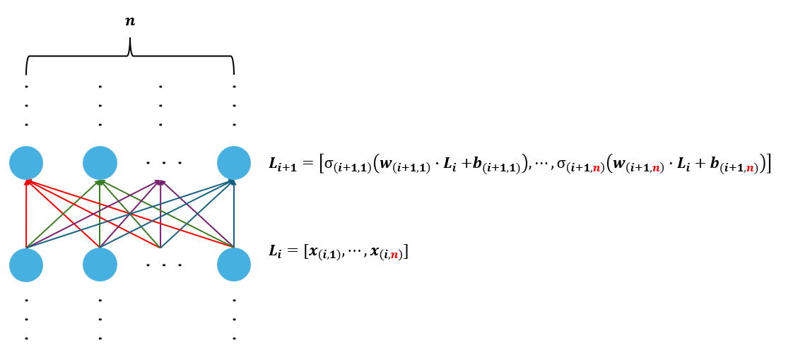
公式：
\[
L_{i+1} =
\begin{bmatrix}
σ_{(i+1,1)}\left(W_{(i+1,1)} \cdot L_i + b_{(i+1,1)}\right), \cdots,
σ_{(i+1,n)}\left(W_{(i+1,n)} \cdot L_i + b_{(i+1,n)}\right)
\end{bmatrix}
\]
當然，每一層的數量也不一定一樣，如圖：
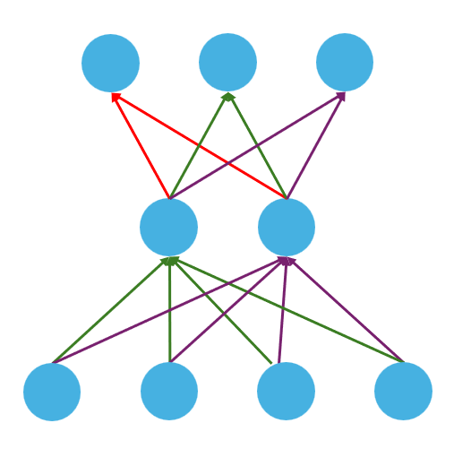
回歸問題(Regression Problem)
在多層神經元要處裡回歸問題時，輸出的會是實數，代表可能是房價或是某數字。
這時我們的最後一層只需要一個神經元，而這個神經元不需要激活函數，直接輸出一個數字即可，如圖， \(L_m\) 為 \(1 \times m\) 的矩陣。
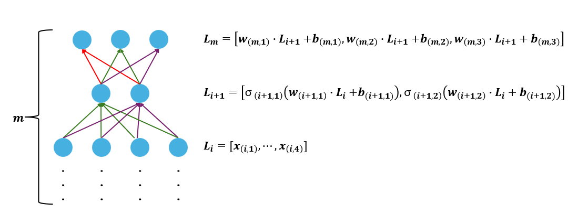
分類問題(Classification Problem)
在分類問題時，會使用 \(Softmax\) 函數將最後一層的神經元輸出矩陣轉換為機率分布(總和為1)，如圖：
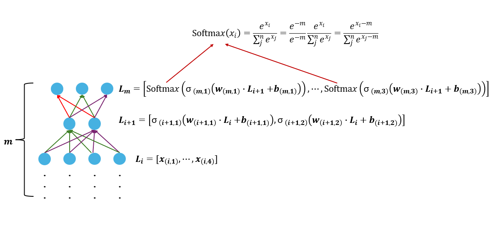
所以如果最後一層為 \(L_m=[1,2,5,3,4]\) ，輸出如圖：
可以看到，假設輸入了一張圖片，如果第三個神經元代表貓，結果顯示「該圖片為貓的機率最高」。
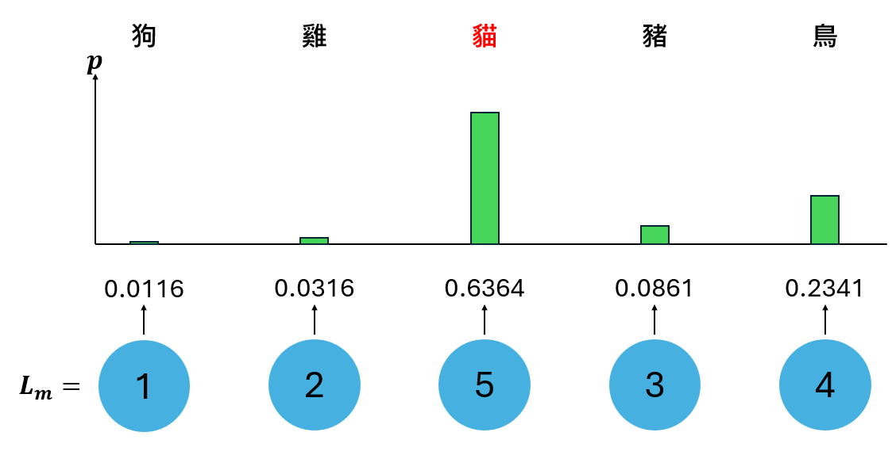
Softmax函數
\[
Softma𝑥(\mathbf{x_i}) = \frac{e^{x_i}}{\sum^n_j e^{x_j}} = \frac{e^{-m}}{e^{-m}} \frac{e^{x_i}}{\sum^n_j e^{x_j}} = \frac{e^{x_i - m}}{\sum^n_j e^{x_j - m}}
\]
所有最後一層的神經元輸出組成的矩陣，如：\(x=[1,2,5,3,4]\)
自然常數（Euler's number）
是 \(x\) 矩陣中的第 \(i\) 項。
\(x\) 矩陣中的最大值
\(x\) 矩陣的總項(欄)數
假設 \(L_m=\) (你可以更改以下數字)
[
,
,
,
,
]
(內容消失時請重新整理或按下f5)
損失函數
我們要告訴人工智慧他找到的假設到底好不好，所以我們需要一個「評分標準」，被稱為損失函數。
損失函數通常是計算「模型輸出」與「標籤(正確答案)」的差異程度，損失函數值越高，代表差異越大。
回歸問題的損失函數：
分類問題的損失函數：
回歸問題的損失函數
MAE(L1 loss)
loss is mean absolute error (MAE)
\[ 輸出：L_m =[ x_1 , x_2 , \cdots , x_n ] \]
\[ 標籤：y =[ y_1 , y_2 , \cdots , y_n ] \]
\[
\text{L1 loss} = \sum_{i=1}^{n} \lvert x_i - y_i \rvert
\]
舉例：
\[
\begin{aligned}
L_m &= [ 0 , 2 , 5 , 3 ] \\
y &= [ 3 , 2 , 3 , 4 ] \\
\text{L1 loss} &= \sum_{i=1}^{n} \lvert x_i - y_i \rvert = 3+0+2+1 =6
\end{aligned}
\]
MSE(L2 loss)
loss is mean square error (MSE)
\[ 輸出：L_m =[ x_1 , x_2 , \cdots , x_n ] \]
\[ 標籤：y =[ y_1 , y_2 , \cdots , y_n ] \]
\[
\text{L2 loss} = \sum_{i=1}^{n} (x_i - y_i)^2
\]
舉例：
\[
\begin{aligned}
L_m &= [ 0 , 2 , 5 , 3 ] \\
y &= [ 3 , 2 , 3 , 4 ] \\
\text{L2 loss} &= \sum_{i=1}^{n} (x_i - y_i)^2 = 9+0+4+1=14
\end{aligned}
\]
分類問題的損失函數
0/1 loss
如果輸出和標籤一樣就得0分(沒有損失)，否則得1分(有損失)。
\[
L(y, \hat{y}) =
\begin{cases}
0 & \text{if } \hat{y} = y \\
1 & \text{if } \hat{y} \neq y
\end{cases}
\]
假設有一組真實標籤 \(y = [1, 0, 1]\)，模型輸出 \(\hat{y} = [1, 1, 0]\)，那麼 0/1 損失的值為：
\[
L(y, \hat{y}) = [0, 1, 1]
\]
解釋：
\(y_1 = \hat{y_1}\) 沒有損失，得到0分
\(y_2 \neq \hat{y_2}\) 有損失，得到1分
\(y_3 \neq \hat{y_3}\) 有損失，得到1分
共2分
Negative Log-Likelihood(NLL)
根據標籤和輸出的機率計算損失函數。
假設模型是輸入一張圖片，要判斷動物。
標籤使用 one-hot vector 的形式，正確答案的動物種類為 1 ，其餘為 0 。
\[ 標籤：y =[ y_1 , y_2 , \cdots , y_n ] \]
而輸出使用softmax函數。
\[ 輸出：L_m =[ x_1 , x_2 , \cdots , x_n ] \]
NLL數學式：
\[
\text{NLL} = - \sum_{i=1}^k y_i \log P(c_i | x)
\]
公式解釋：
所有可能的動物中的第 i 種動物。
模型對圖片 \(x\) 預測它屬於第 \(i\) 種動物的概率。
標籤（one-hot vector）的第 i 項，表示真實答案(標籤)是否為第 i 種，是的話就是 1 不是的話就是 0 。
計算範例(無條件捨去至小數第三位)：
\[ 標籤：y =[ 0 , 0 , 1 , 0 , 0 ] \]
\[ 輸出：L_m =[0.0116, 0.0316, 0.6364, 0.0861, 0.2341] \]
\[
\begin{aligned}
NLL &= -(0*\log 0.011 + 0*\log 0.031 + 1*\log 0.636 + 0*\log 0.086 + 0*\log 0.234) \\
&= -\log 0.636 \\
&= 0.197
\end{aligned}
\]
我們試試看正確的類別是第二類別：
\[ 標籤：y =[ 0 , 1 , 0 , 0 , 0 ] \]
\[ 輸出：L_m =[0.0116, 0.0316, 0.6364, 0.0861, 0.2341] \]
\[
\begin{aligned}
NLL &= -(0*\log 0.011 + 1*\log 0.031 + 0*\log 0.636 + 0*\log 0.086 + 0*\log 0.234) \\
&= -\log 0.031 \\
&= 1.508
\end{aligned}
\]
可以看到損失變大了
梯度下降演算法
有了損失函數之後，我們訓練的目標就顯而易見了：「讓模型的 loss 越低越好」
這時可以把機器學習看成一個最佳化問題：「模型的參數如何選擇時，可以得到最低的 loss，讓預測結果最接近真實答案」
一元函數梯度下降演算法
為了解釋梯度下降演算法，我們先理解他的運作原理，我們用一個簡單的例子：
不管輸入及輸出， loss function 為 \(loss=x^2\) ，我們要如何找出最好的 x 讓 loss 最小。
我們將 \(loss=x^2\) 的圖形畫出來：
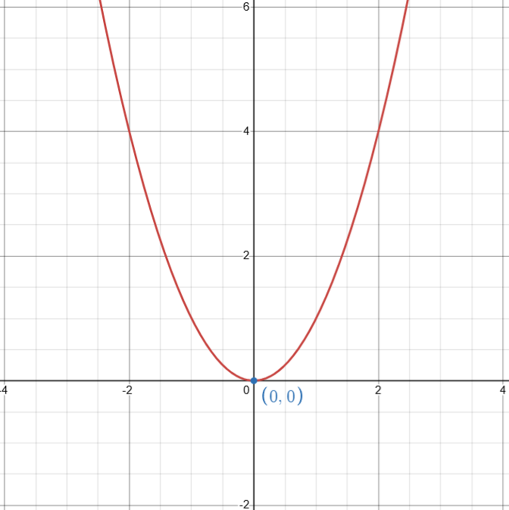
顯而易見，我們要找出圖形中的極小值(最小的數值)，也就是最小的 \(loss(y)\)，答案是：「\(x\) 為 \(0\) 時，有極小值 \(loss(y)\) 為 \(0\)」
你可能會想說為何不直接微分 \([x^2]'=2x\) ，得到 \(x\) 為 \(0\) 時有極小值。
那是因為現在的函數為一元函數，若為多元函數便無法做到。
若使用梯度下降演算法，可以使用於夠複雜的多元函數，而我們現在先舉例一元函數就好。
數學式
梯度下降演算法數學式：
\[
\theta_{i+1} := \theta_i - η \nabla_\theta f(\theta)
\]
解釋：
更新後的參數值，也就是在第 \(i+1\) 次迭代後的參數。
第 \(i\) 次迭代的參數值。
學習率 (Learning Rate)，用來控制每次更新步長的大小。
損失函數 \(f(\theta)\) 相對於參數 \(\theta\) 的梯度。
我們針對現在的 loss function( \(loss=x^2\) ) 寫一個更好懂的數學式：
\[
x_{new} := x - η f'(x)
\]
解釋：
更新之後的x數值。
原本的x數值。
這是學習率 (Learning Rate)，用來控制每次更新步長的大小。
\(x\) 在 \(f(x)\) 時的斜率。
接下來我們提出幾個問題
-
為何算式中有 f'(x)
\(f'(x)\)代表斜率。
斜率為正時，代表在 \(x\) 附近遞增，便意味著若要讓 \(f(x)\) 減少(下降)，\(x\) 就要往負的地方移動，也就是把 \(x\) 減去 \(f'(x)\) 。
若斜率為負則反之。 -
為何要使用學習率
假設原本 \(x\) 是 \(10\)，\(f(x)=x^2\)，\(f'(x)=2x\)。
第一次更新： \(-10 = 10-2*10\)
第二次更新： \(10 = -10 - 2*(-10)\)
第三次更新： \(-10 = 10-2*10\)
第四次更新： \(10 = -10 - 2*(-10)\)
可以發現，這樣會一直循環沒有結果，我們可以試著在更新越多次時，每次走的更少，所增加了學習率：
第一次更新： \(-6 = 10 - 0.8*2*10\)
第二次更新： \(4 = -6 - 0.8*2*(-6)\)
第三次更新： \(-2 = 4 - 0.8*2*4\)
這樣就不會鬼牆了
接下來我們操作一次，我們除了上述變數，還要設定「收斂條件」及「最大跌代次數」，不然程式會沒有終止條件，可能永遠不會結束。
- 收斂條件：模型可能永遠不會達到斜率為0的最低點，要走到的機率也很小，所以我們要設定一個值，也就是符合我們期待的斜率，跟模型說他訓練的夠好了。
- 最大跌代次數：防止無限迭代，及避免過度計算，節省運算資源。
模擬
你可以更改以下數字(初始值不可更改)，你可以從「最大迭代次數 (max iterations)=0」開始，慢慢增加迭代次數，看看迭代過程。
(內容消失時請重新整理或按下f5)
這個例子和實際的梯度下降演算法還是有一些差異喔！！
備註
一元函數 (Univariate Function)
只有一個自變量 \( x \)，形式為 \( f(x) \)，輸入一個變量，輸出一個值。
例子：
- \( f(x) = x^2 \)
- \( f(x) = 3x + 5 \)
多元函數 (Multivariate Function)
有多個(兩個以上)自變量，形式為 \( f(x_1, x_2, \dots, x_n) \)，輸入多個變量，輸出一個值。
例子：
- \( f(x, y) = x^2 + y^2 \)
- \( f(x, y, z) = x + y + z \)
多元函數梯度下降演算法
有了損失函數之後，我們訓練的目標就顯而易見了：「讓模型的 loss 越低越好」
這時可以把機器學習看成一個最佳化問題：「模型的參數為多少時，可以得到最低的 loss」
我們假設損失函數為 L2 loss ，看看如何執行梯度下降演算法，模型如下圖。
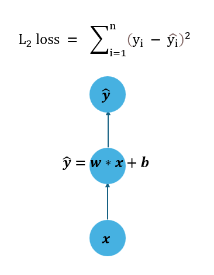
這個模型輸入數值 \(x\) ， 計算之後輸出 \(\hat{y}\) ，再其中我們希望學習演算法調整的參數有 \(w\) 及 \(b\) ，而他使用 L2 loss 作為 loss function，如下。
\[
L2 \_ loss = \sum_{i=1}^{n} (y_i - \hat{y}_i)^2 = f(x)= \sum_{i=1}^{n} (y_i - (wx_i + b))^2
\]
所以我們的目的便是：「找到最一個 \((w,x)\) 組合，使 \(L2 \_ loss\) 的數值最小」。
我們回憶一下一元函數梯度下降的數學式：
\[
\theta_{i+1} := \theta_i - η \nabla_\theta f(\theta)
\]
而我們要找的變數有 \(w\) 、 \(b\) ，可以得到兩個數學式：
\[
w_{new} := w - η \frac{\partial L2\_loss}{\partial w}
\]
\[
b_{new} := b - η \frac{\partial L2\_loss}{\partial b}
\]
解釋：
我們先將所有會用到的都計算好
模型為：
\[
\hat{y}=wx+b
\]
損失函數：
\[
loss = \sum_{i=1}^{n} (y_i - \hat{y}_i)^2 = f(x)= \sum_{i=1}^{n} (y_i - (wx_i + b))^2
\]
loss對w偏導：
我們先不管\(\sum\)，最後再加入(根據\(\sum\)的性質)
\[
\begin{aligned}
令loss &= \sum_{i=1}^{n} loss',\ loss' = (y_i - (wx + b))^2 \\
\frac{\partial loss'}{\partial w} &= 2(y_i - (wx + b))^{2-1} \cdot \frac{\partial }{\partial w}(y_i - (wx + b)) \\
&=2(y_i - (wx + b)) \cdot \frac{\partial }{\partial w}(wx) \\
&=2(y_i - (wx + b)) \cdot x \\
&=2x(y_i - (wx + b)) \\
故\frac{\partial loss}{\partial w} &= \sum_{i=1}^{n} 2x(y_i - (wx + b))= \sum_{i=1}^{n} 2x(y_i - \hat{y})
\end{aligned}
\]
loss對b偏導：
我們先不管\(\sum\)，最後再加入(根據\(\sum\)的性質)
\[
\begin{aligned}
令loss &= \sum_{i=1}^{n} loss',\ loss' = (y_i - (wx + b))^2 \\
\frac{\partial loss'}{\partial b} &= 2(y_i - (wx + b))^{2-1} \cdot \frac{\partial }{\partial b}(y_i - (wx + b)) \\
&=2(y_i - (wx + b)) \cdot \frac{\partial }{\partial b}(b) \\
&=2(y_i - (wx + b)) \cdot 1 \\
&=2(y_i - (wx + b)) \\
故\frac{\partial loss}{\partial b} &= \sum_{i=1}^{n} 2(y_i - (wx + b))= \sum_{i=1}^{n} 2(y_i - \hat{y})
\end{aligned}
\]
計算流程
// 宣告 w 、 b
w = 5
b = 5
重複「最大跌帶次數」次：
// 從訓練資料中拿取一個Batch的資料
X = [1, 2, 3, 4]
// 拿取的訓練資料(X)的正確答案(標籤)
y = [5, 7, 9, 11]
// 宣告一個預測值陣列，\(\hat{y}=[wx_i+b,wx_{i+1}+b,...,wx_i+b]\)
y_hat = w * X(陣列) + b
// 計算損失 (L2 Loss)，\(loss=\sum_{i=1}^{n} (y_i - \hat{y}_i)^2\)
loss = sigma((y - y_hat) ** 2)
// 計算w梯度\(\frac{\partial loss}{\partial w} = \sum_{i=1}^{n} 2x(y_i - (wx + b))= \sum_{i=1}^{n} 2x(y_i - \hat{y})\)
grad_w = -2 * sigma(X * (y - y_hat))
// 計算b梯度\(\frac{\partial loss}{\partial b} = \sum_{i=1}^{n} 2(y_i - (wx + b))= \sum_{i=1}^{n} 2(y_i - \hat{y})\)
grad_b = -2 * sigma(y - y_hat)
//更新w參數
w = w - eta * grad_w
//更新b參數
b = b - eta * grad_b
// 收斂條件判斷：如果梯度的大小小於收斂閾值，停止迭代
if sqrt(grad_w ** 2 + grad_b ** 2) < 收斂閾值:
離開迴圈
最後得到 w 、 b
模擬
輸入 X = [1, 2, 3, 4]
標籤 y = [5, 7, 9, 11]
模型 y = wx + b
初始 w = 5
初始 b = 5
(內容消失時請重新整理或按下f5)
補充
如果覺得對於梯度下降演算法不夠熟悉，可以參考以下兩個影片
https://www.youtube.com/watch?v=UkcUZTe49Pg
https://www.youtube.com/watch?v=s7BxboxEfnU
備註
偏微分
我們先來講一元函數微分，公式 ：
\[
\frac{d}{dx}(x^n) = n \cdot x^{n-1}
\]
所以
\[ f(x) = x^2 + x + 1 \]
\[
f'(x) = \frac{df}{dx} = 2x^{2-1} + x^{1-1} + 0 \cdot 1 \cdot x^{0-1} = 2x + 1 + 0 = 2x + 1
\]
接下來我們看看偏微分
偏微分是針對多變數函數的一種微分方法。在偏微分中，我們選擇其中的一個變數進行微分，其他變數視為常數。
對於一個多變數函數 \(f(x, y, z)\)，如果只對變數 \(z\) 求導，記作：
\[
\frac{\partial f}{\partial x}
\]
這表示只考慮 \(z\) 的變化，而把 \(x\) 和 \(y\) 當作常數。
假設有一個函數：
\[ f(x, y, z) = x^2 + x + y^3 + y^2 + z^3 + z^2 + z + 1 \]
對於這個函數，只有包含 \(z\) 的項會影響偏導數，與 \(z\) 無關的部分視為常數，其導數為 \(0\)。
包含 \(z\) 的項為：
\[ z^3 + z^2 + z \]
其餘項 \(x^2 + x + y^3 + y^2 + 1\) 的偏導數為 \(0\)，因為它們與 \(z\) 無關。
求偏導數：
逐項計算對 \(z\) 的偏導數：
- \(\frac{\partial}{\partial z}(z^3) = 3z^2\) （乘冪微分公式 \(\frac{d}{dx}(x^n) = n \cdot x^{n-1}\)）
- \(\frac{\partial}{\partial z}(z^2) = 2z\)
- \(\frac{\partial}{\partial z}(z) = 1\)
綜合結果：
將偏導數加總：
\[
\frac{\partial f}{\partial z} = 3z^2 + 2z + 1
\]
最終答案：
對 \(z\) 偏微分的結果為：
\[
\frac{\partial f}{\partial z} = 3z^2 + 2z + 1
\]
Batch
在機器學習中，batch（批次）指的是在訓練過程中，每次用來更新模型參數的一組數據樣本。訓練過程中的數據通常不是一次性全部傳遞給模型，而是分批進行處理，每一批數據稱為「mini-batch」。
為什麼要使用 batch？
1. 計算效率：將數據分批處理有助於減少計算量，並且可以充分利用硬體資源（如 GPU），這樣可以提高訓練效率。
-
內存限制：如果數據集非常大，一次性將所有數據加載到內存中可能不現實，分批處理可以減少內存的需求。
-
梯度估計：每個批次中的數據樣本不足以計算整批次的梯度。這也使用迷你批量梯度集來計算梯度（全批次梯度下降）更快，但依然能夠達到足夠長的性能。因此比單一樣本更新（隨機梯度下降）來得穩定。
Epoch
把所有的 Batch 都看過一次叫做 Epoch
Update
在看過一次 Batch 之後每更新一次參數叫做一次 Update
幫助訓練神經網路
Dropout
這是一種Generalization的方式，能夠有效防止overfitting。
如下圖，(a)是一般的神經網路，(b)是加上 Dropout 機制的神經元。
Dropout 就是在訓練時將幾個神經元隨機關閉進行訓練，避免每個神經元「太專一」，也就是避免每個神經元只能做同樣的事情。
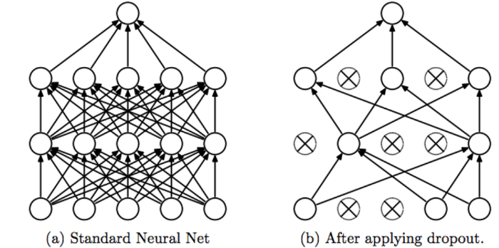
圖片來源
如下圖，Dropout 與一般神經網路的差異就是於神經元計算完成後乘上 r ，這個 r 可能是 0 或是 1 ，也就是決定是否啟用神經元(決定是否採用神經元的輸出)。
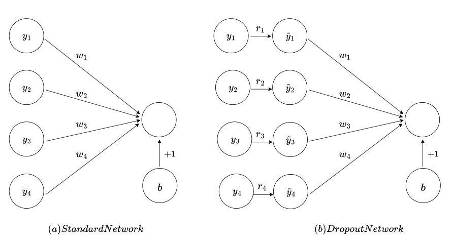
圖片來源
數學式如下，紅色是 Dropout 機制才有的計算，可以看到透過Bernoulli(伯努利分布，也就是隨機的方式)得到 r 為 1 或是 0 ，再將神經元輸出乘上 r ，用來決定是否要將神經元的輸出加入計算。
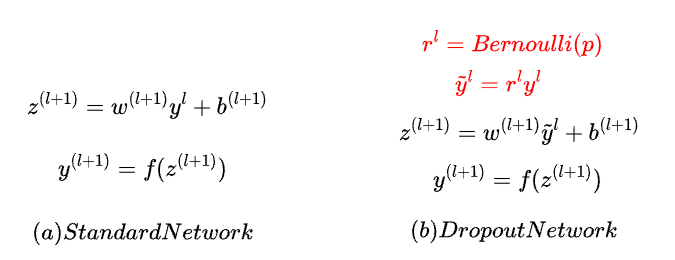
圖片來源
Batch Normalization
Batch Normalization 的作法就是對每一個 mini-batch 都進行正規化，將數據轉換為均值為0、標準差為1的常態分佈。這樣可以將分散的數據統一，有助於減緩梯度消失問題，並解決內部協方差偏移（Internal Covariate Shift）的問題。由於每層的輸入數據保持穩定，模型能夠更快速地收斂。此外，Batch Normalization 還具有generalization的效果，這使得模型在某些情況下可以不使用 Dropout 等其他generalization技術。總結來說，Batch Normalization 可以提高訓練效率、穩定性，並減少過擬合的風險。
梯度傳遞
我們逐步來講解每一層的輸入微分，再將它轉換為對權重 \( W \) 和輸入 \( x \) 的梯度計算。這樣更能清楚地看到每層的微分如何傳遞到權重和偏置。
每層的定義
- 輸入：\( x^{(l)} \)
- 輸出：\( y^{(l)} = g(z^{(l)}) \)
- 線性組合：\( z^{(l)} = W^{(l)} x^{(l)} + b^{(l)} \)
- 激活函數：\( g \)
目標：從 損失函數 \( L \) 開始，計算每層的輸入微分，然後將它轉換為權重 \( W^{(l)} \) 和偏置 \( b^{(l)} \) 的梯度。
1. 第 5 層（輸出層）
- 損失對輸出 \( y^{(5)} \) 的微分：
\[
\frac{\partial L}{\partial y^{(5)}}
\]
- 損失對線性輸出 \( z^{(5)} \) 的微分：
由鏈式法則，激活函數 \( g \) 的導數 \( g'(z^{(5)}) \) 帶入：
\[
\frac{\partial L}{\partial z^{(5)}} = \frac{\partial L}{\partial y^{(5)}} \cdot g'(z^{(5)})
\]
- 將損失對輸入 \( x^{(5)} \) 的微分轉換至權重 \( W^{(5)} \)：
\[
\frac{\partial L}{\partial W^{(5)}} = \frac{\partial L}{\partial z^{(5)}} \cdot x^{(5)^T}
\]
- 損失對偏置 \( b^{(5)} \) 的微分：
\[
\frac{\partial L}{\partial b^{(5)}} = \frac{\partial L}{\partial z^{(5)}}
\]
2. 第 4 層
- 損失對第 4 層輸出 \( y^{(4)} \) 的微分：
從第 5 層傳回來，透過權重 \( W^{(5)} \)：
\[
\frac{\partial L}{\partial y^{(4)}} = W^{(5)^T} \cdot \frac{\partial L}{\partial z^{(5)}}
\]
- 損失對線性輸出 \( z^{(4)} \) 的微分：
激活函數的導數 \( g'(z^{(4)}) \)：
\[
\frac{\partial L}{\partial z^{(4)}} = \frac{\partial L}{\partial y^{(4)}} \cdot g'(z^{(4)})
\]
- 將損失對輸入 \( x^{(4)} \) 的微分轉換至權重 \( W^{(4)} \)：
\[
\frac{\partial L}{\partial W^{(4)}} = \frac{\partial L}{\partial z^{(4)}} \cdot x^{(4)^T}
\]
- 損失對偏置 \( b^{(4)} \) 的微分：
\[
\frac{\partial L}{\partial b^{(4)}} = \frac{\partial L}{\partial z^{(4)}}
\]
3. 第 3 層
- 損失對第 3 層輸出 \( y^{(3)} \) 的微分：
\[
\frac{\partial L}{\partial y^{(3)}} = W^{(4)^T} \cdot \frac{\partial L}{\partial z^{(4)}}
\]
- 損失對線性輸出 \( z^{(3)} \) 的微分：
\[
\frac{\partial L}{\partial z^{(3)}} = \frac{\partial L}{\partial y^{(3)}} \cdot g'(z^{(3)})
\]
- 將損失對輸入 \( x^{(3)} \) 的微分轉換至權重 \( W^{(3)} \)：
\[
\frac{\partial L}{\partial W^{(3)}} = \frac{\partial L}{\partial z^{(3)}} \cdot x^{(3)^T}
\]
- 損失對偏置 \( b^{(3)} \) 的微分：
\[
\frac{\partial L}{\partial b^{(3)}} = \frac{\partial L}{\partial z^{(3)}}
\]
4. 第 2 層
- 損失對第 2 層輸出 \( y^{(2)} \) 的微分：
\[
\frac{\partial L}{\partial y^{(2)}} = W^{(3)^T} \cdot \frac{\partial L}{\partial z^{(3)}}
\]
- 損失對線性輸出 \( z^{(2)} \) 的微分：
\[
\frac{\partial L}{\partial z^{(2)}} = \frac{\partial L}{\partial y^{(2)}} \cdot g'(z^{(2)})
\]
- 將損失對輸入 \( x^{(2)} \) 的微分轉換至權重 \( W^{(2)} \)：
\[
\frac{\partial L}{\partial W^{(2)}} = \frac{\partial L}{\partial z^{(2)}} \cdot x^{(2)^T}
\]
- 損失對偏置 \( b^{(2)} \) 的微分：
\[
\frac{\partial L}{\partial b^{(2)}} = \frac{\partial L}{\partial z^{(2)}}
\]
5. 第 1 層
- 損失對第 1 層輸出 \( y^{(1)} \) 的微分：
\[
\frac{\partial L}{\partial y^{(1)}} = W^{(2)^T} \cdot \frac{\partial L}{\partial z^{(2)}}
\]
- 損失對線性輸出 \( z^{(1)} \) 的微分：
\[
\frac{\partial L}{\partial z^{(1)}} = \frac{\partial L}{\partial y^{(1)}} \cdot g'(z^{(1)})
\]
- 將損失對輸入 \( x^{(1)} \) 的微分轉換至權重 \( W^{(1)} \)：
\[
\frac{\partial L}{\partial W^{(1)}} = \frac{\partial L}{\partial z^{(1)}} \cdot x^{(1)^T}
\]
- 損失對偏置 \( b^{(1)} \) 的微分：
\[
\frac{\partial L}{\partial b^{(1)}} = \frac{\partial L}{\partial z^{(1)}}
\]
統一總結
對於第 \( l \) 層：
1. 損失對線性輸出 \( z^{(l)} \) 的微分：
\[
\frac{\partial L}{\partial z^{(l)}} = \left( W^{(l+1)^T} \frac{\partial L}{\partial z^{(l+1)}} \right) \cdot g'(z^{(l)})
\]
- 權重梯度 \( W^{(l)} \)：
\[
\frac{\partial L}{\partial W^{(l)}} = \frac{\partial L}{\partial z^{(l)}} \cdot x^{(l)^T}
\]
- 偏置梯度 \( b^{(l)} \)：
\[
\frac{\partial L}{\partial b^{(l)}} = \frac{\partial L}{\partial z^{(l)}}
\]
這樣，從輸出層逐層向回傳遞，將損失對輸入的微分一步步轉換為權重 \( W \) 和偏置 \( b \) 的梯度。
梯度消失
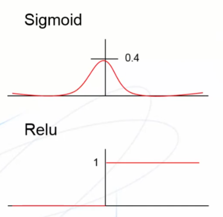
圖片來源：交大人培
看到圖片，sigmoid的微分在遠離0時，會接近0，導致梯度超級小，調整幅度超級小。
要解決這問題可以可以將激活函數換成Relu，他在正數時都是1，所以不會導致梯度消失